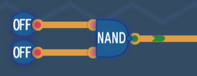

A NAND kapu a későbbi AND kapu tagadása (neve is: Not AND).
Csak akkor ad 0-t, ha minden bemenet 1.
Minden más esetben a kimenet 1. Ez az egyik legfontosabb kapu, mert önmagában is képes bármely más logikai művelet megvalósítására.
| A | B | A NAND B |
|---|---|---|
| T | T | F |
| T | F | T |
| F | T | T |
| F | F | T |